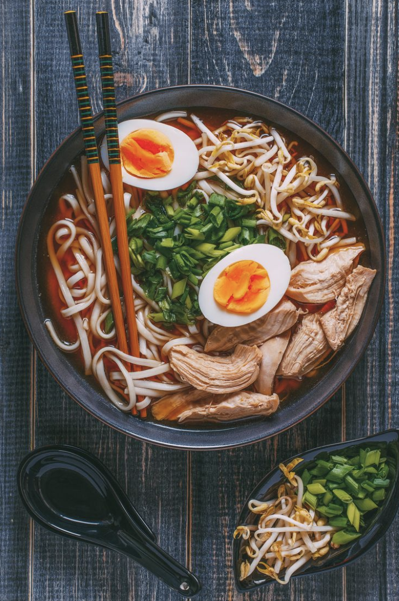
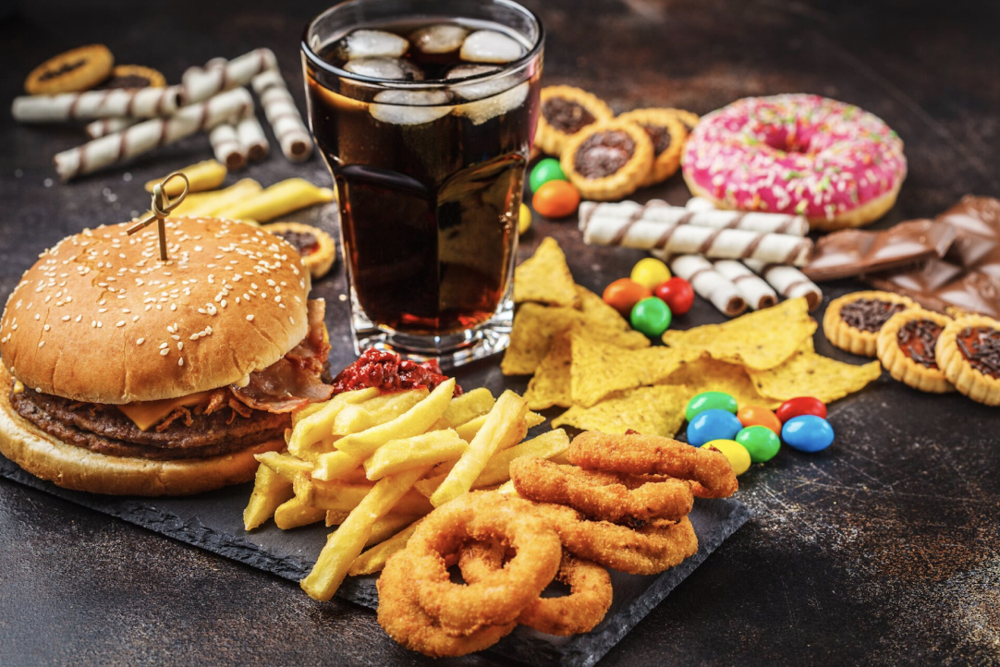
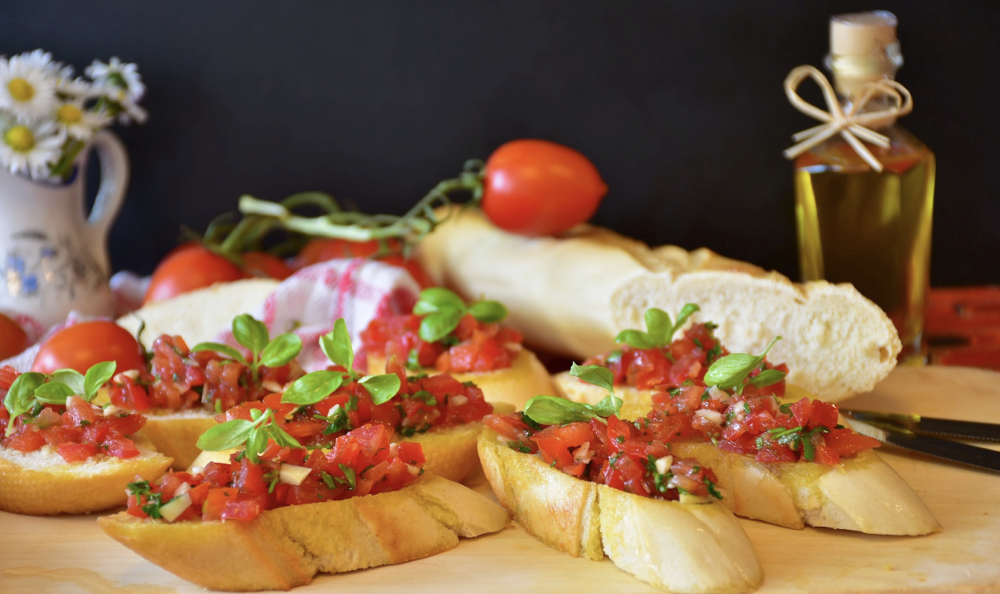
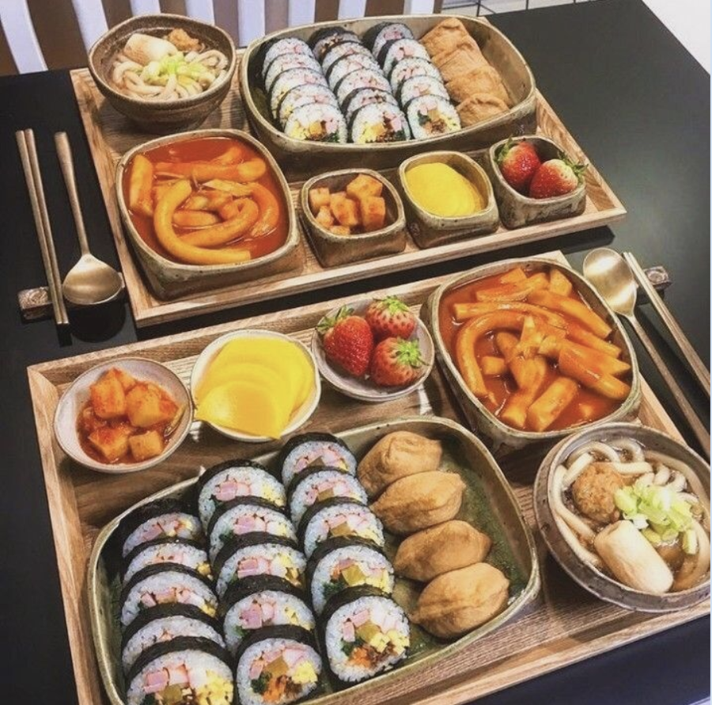
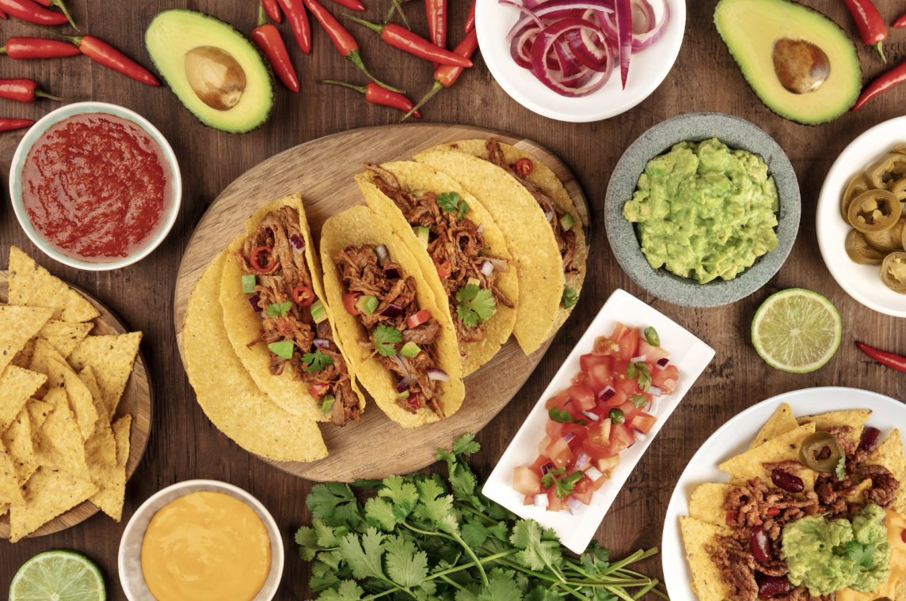

Comida Rápida
Colegio Frances Hidalgo, Alheli y Sofía
Diferentes comidas del mundo
La gastronomía es la ciencia y arte que estudia la relación del ser humano con su alimentación y su medio ambiente o entorno.
Comida Japonesa

Sopa Ramen
Los mejores platillos de la comida japonesa.
- Yakisoba
- Sopa de miso
- Karaage
- Sushi
- Ramen
- Mochi
Comida Rápida

Ejemplo de comida rápida
Los mejores platillos de la comida rápida.
- Refresco
- Hamburgesa
- Donas
- Papas fritas
- Aros de cebolla
Comida Italiana

Ejemplos de comida Italiana
Los mejores platillos de la comida italiana.
- Pizza
- Lasaña
- Espagueti
- Ratatouille
- Panini
Comida Coreana

Ejemplos de comida coreana
Los mejores platillos de la comida coreana.
- Bulgogi
- Mandu
- Bibimbap
- Gimpap
- Hangwa
Comida Mexicana

Ejemplos de comida mexicana
Los mejores platillos de la comida Mexicana.
- Tacos
- Tamal
- Enchiladas
- Salsa
- Guacamole con totopos
Referencias
- Diez Platos Típicos Coreanos | Comida Coreana